DDNet page with all DDNet servers, filterable by country (by east)
All settings saved in settings_ddnet.cfg instead of settings.cfg
Cut demos into parts and save them (by east)
Old gun holding position
cl_overlay_entities (0-100) instead of cl_show_entities
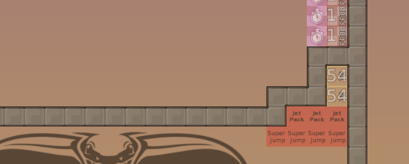
More colors in serverbrowser (thanks to NooBxGockeL & GamerClient)
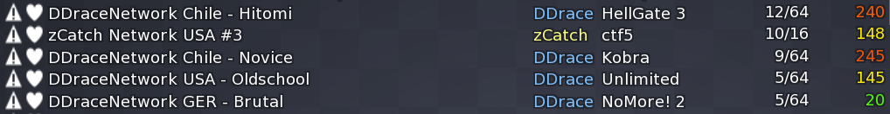
Feature: Inputs always work in freeze (on any DDRace server)
Dummy for all servers, including hammerfly with dummy:
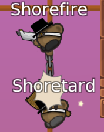
How to hookfly with dummy: Hold the keys for hook and run and switch. Use hammerfly toggle key to make your dummy hook and stop hooking:
Show key presses (by unsigned char*)
Auto-Updater
Auto-Reconnect (by CookieMichal)
A new DDNet start line (ddnet-start.png)
Walls and automapper for them by Broken
bind s +showhookcoll to see where hook will hit exactly
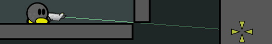
Official DDNet Tiles by 645654 & Phacrum
Display teams in scoreboard
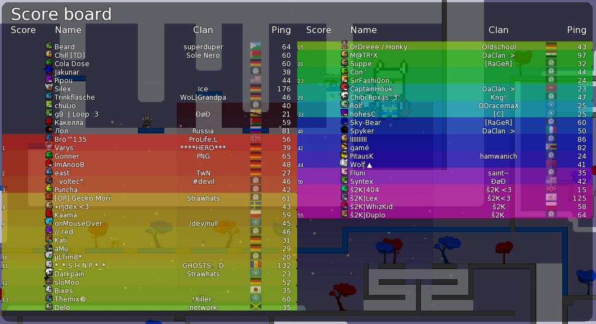
Render players in other teams half transparent (/showothers)
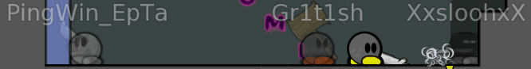
Better and faster server list refresh (by Pata94)
64 player client (initial work by eeeee)
More advanced automapper rules and some for ddnet-tiles, round-tiles, grass_main (Freeze, Unfreeze, Tele) and fadeout
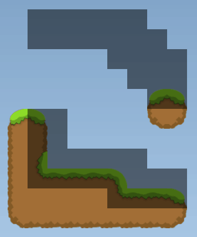
Source (set by mapper)
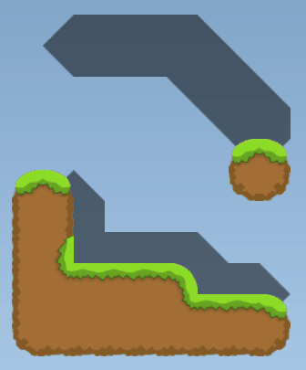
Automapped (grass_main)
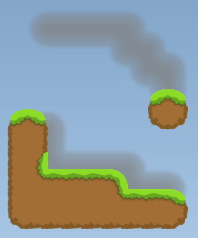
Automapped (fadeout)
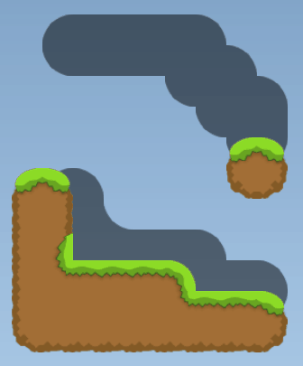
Automapped (round-tiles)
Maps load 30 times faster than in DDRace client
AntiPing (Prediction for grenades and other tees)
More friends and favorites
Better looking entities to play with
Vote window gets moved to scoreboard after you voted
Map using extended teleports and our other new features
Zoom out in all mods (not just Race and DDRace) when you're a spectator
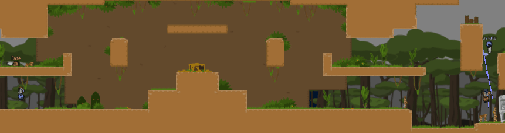
Disable sound notification for server messages
Disable quads for weaker computers, annoying map backgrounds, or to zoom out nicely in maps